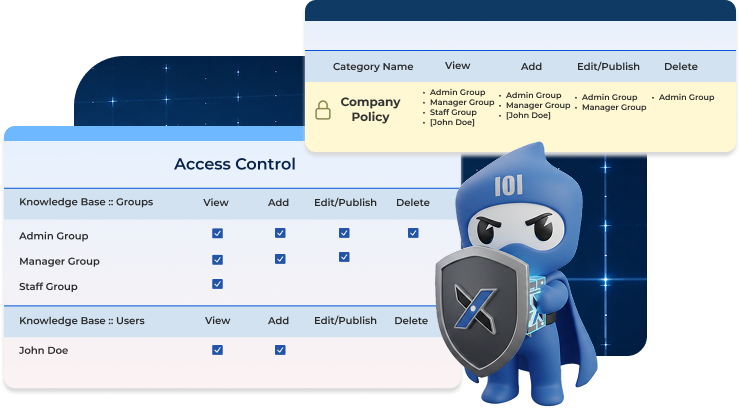
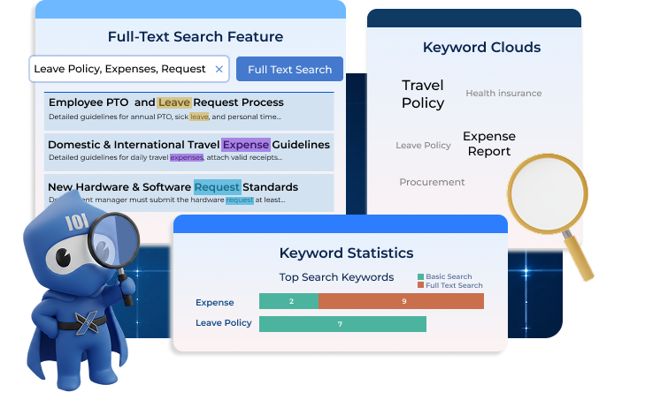
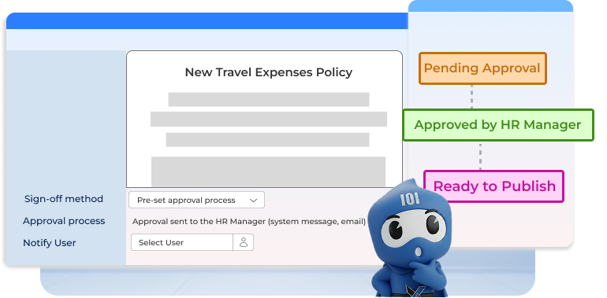
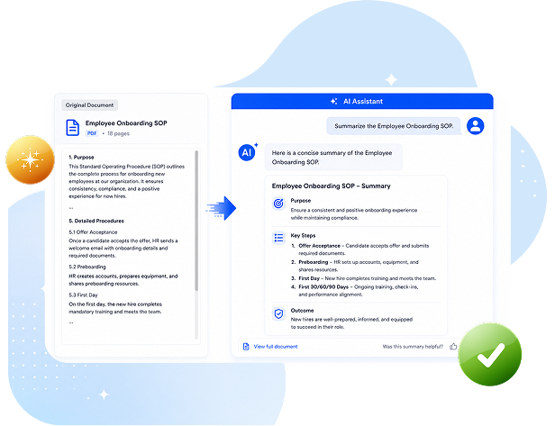
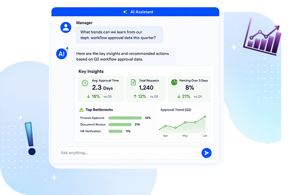

Diverse Knowledge Type Creation
Provide functions for adding, managing, and publishing diverse knowledge content (such as articles, albums, videos, files, and websites) to meet the company's diverse needs in knowledge presentation.
Knowledge Management (KM) creates, collects, and manages organizational knowledge assets, enabling employees to quickly access the information they need, fostering collaboration and learning, and enhancing overall productivity and innovation.
Provide functions for adding, managing, and publishing diverse knowledge content (such as articles, albums, videos, files, and websites) to meet the company's diverse needs in knowledge presentation.
Set permissions and access levels based on knowledge types to provide dual protection for the company's critical knowledge assets.
This also ensures that important organizational knowledge cannot be arbitrarily modified or deleted.

A built-in search engine provides full-text search functionality for knowledge points.
It also offers keyword clouds and graphical statistical reports, enabling the organization to accurately track usage needs, frequency, and departments of the knowledge.

The addition and modification management of important knowledge can be integrated with the organization's internal audit mechanism for process design and responsibility management.
This includes tasks such as approval, countersignature, assignment, and notification.

Quickly locate relevant information and source references from your knowledge base.
Generate responses based on authorized knowledge sources and access permissions.
Convert documents, SOPs, and work instructions into flowcharts within seconds.

Transform lengthy documents into concise, easy-to-understand summaries.
Convert complex content into digestible knowledge for employees.
Maintain consistent process documentation across departments.

Transform organizational knowledge into practical recommendations.
Help optimize processes, policies, and operational performance.